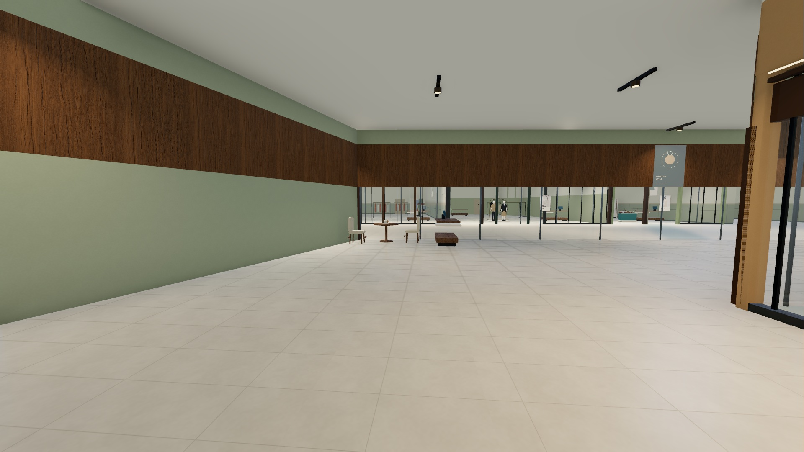
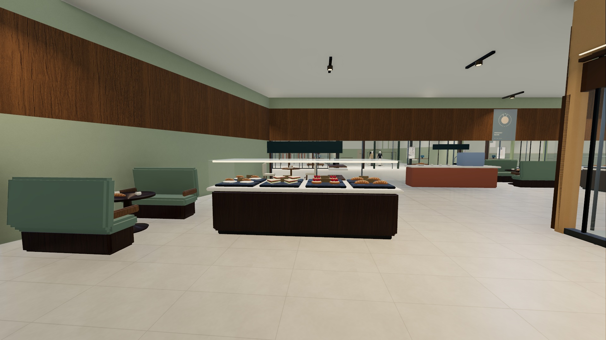
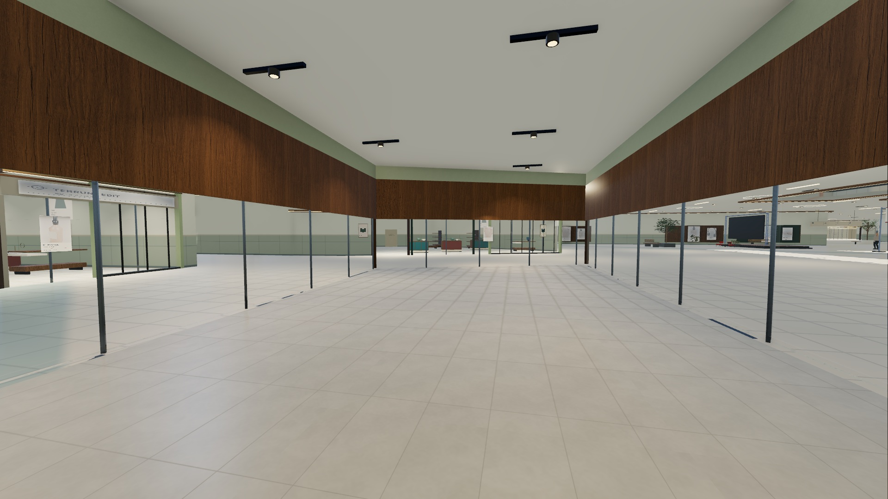
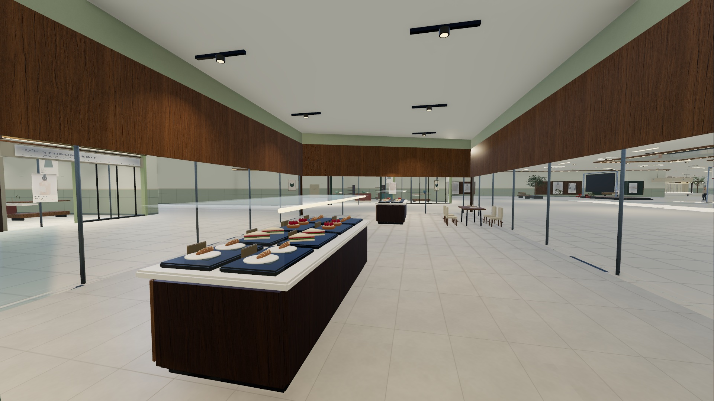
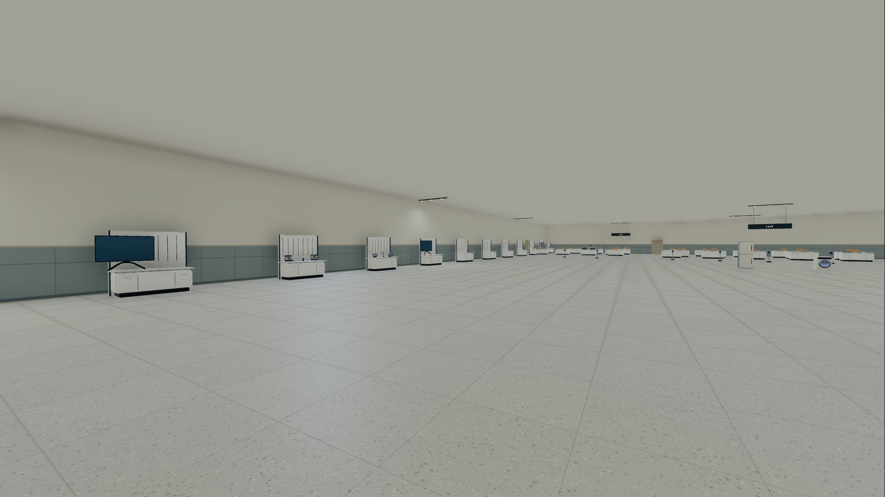
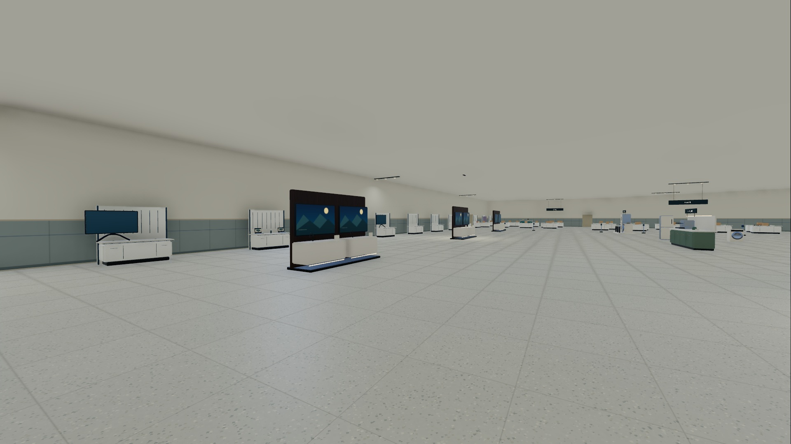
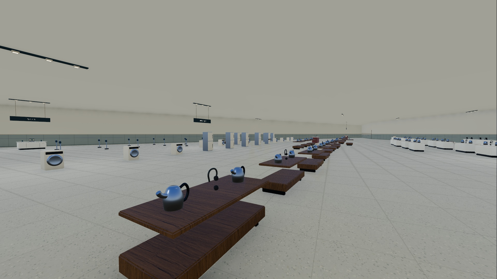
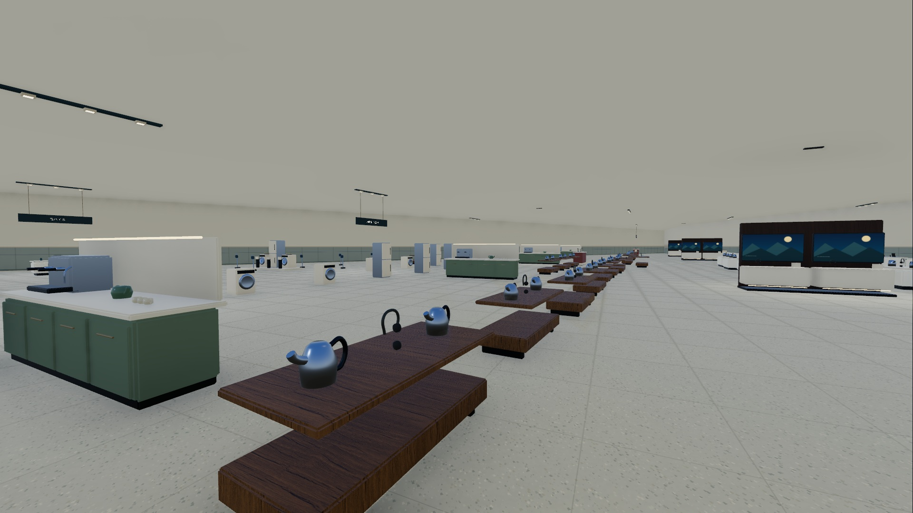
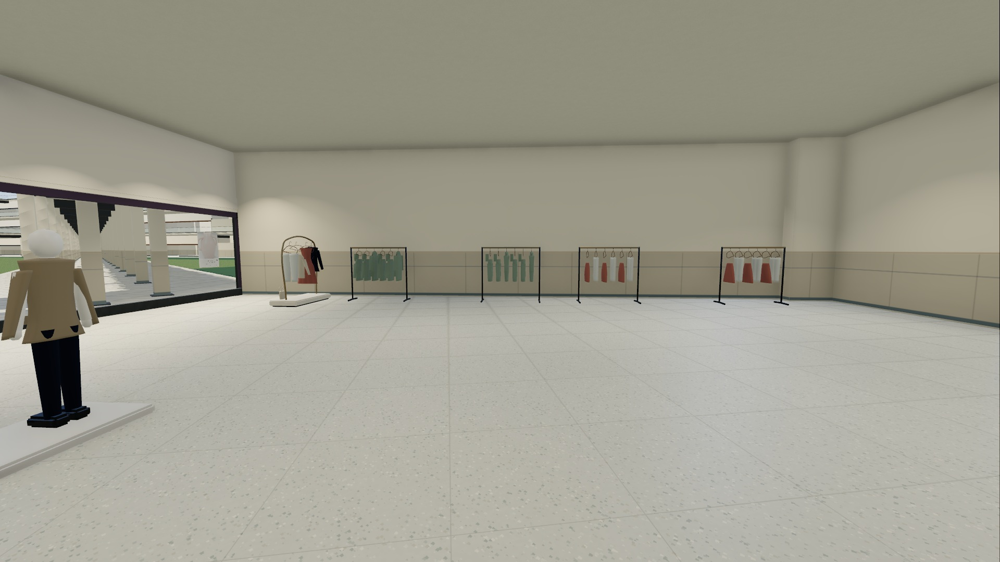
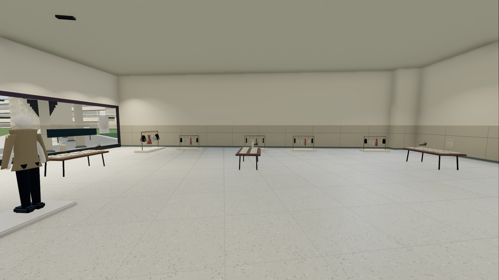

A1F-002-front
eye [458.22684168356955, 1.65, -6.855874990989211] / look [464.40227545651925, 2.5, -6.304496975547296] / FOV 78

専用モデル10種類、19基の置換と38基の追加。看板2店舗を実際の梁への支持位置に再配置。ベーカリーでは現行台帳以外の旧形式家具も実シーンに残っていたため、配置5基を実衝突に基づいて局所修正しました。建物・店舗境界・入口は変更していません。
主要233区間、店舗内42経路の実衝突掃引と立位を両版で確認。4店舗各1本の代表経路を、実プレイヤー処理で自動往復しています。NPC衝突は除外した幾何検証です。
改修内容・未完成 / 引継ぎ139店舗監査 / 233区間台帳 / 店舗内42経路 / 什器・座標 / 4店舗配置図PDF
検査詳細 / ソフトウェアGPU描画負荷 / 480店舗・原データ保護 / 素材の出典と条件 / 新規展開起動
左v29／右v29.1。すべて実際のGodot Viewport、1920×1080。同じ座標・向き・FOV。買い物客43人を起動後に凍結していますが、アニメーション時刻の完全同期はしていません。画像クリックで原寸表示。











